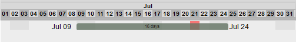
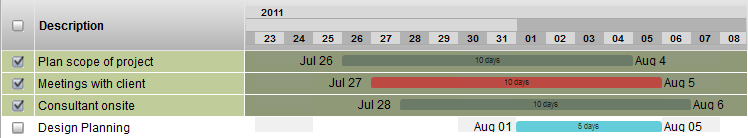
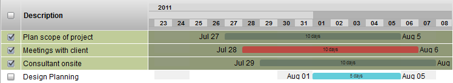
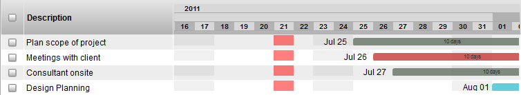

The Gantt Widget displays a horizontal bar graph representing the item's start date, end date and duration. The bar graph can be clicked on and dragged to manipulate schedules for projects and task schedules. The widget has 2 view modes: weeks and months view.
View modes: Toggle the Gantt Widget between the 2 viewing modes by double clicking on the column header.
view mode: months

view mode: days

Start/End Date: Modify the start and end dates by left clicking and dragging them.
Hover Pop-up: Hover the cursor over the horizontal bars to pop-up a window that displays the dates of the schedule.
Shifting the bar: Click dragging the bar shifts the start and end dates bar while maintaining the duration.
Multi-selection Edit: First, check mark the items to be modified.

Adjust multiple start dates: With multiple items selected, click drag on one of the start dates to adjust all the start dates simultaneously.

Adjust multiple end dates: With multiple items selected, click drag on one of the end dates to adjust all the end dates simultaneously.

Shift all the bars: With multiple items selected, click drag on one of the bars to shift all the start/end dates simultaneously while maintaining the duration.

Shift the view: Click drag on an empty area of the Gantt Widget to the mouse left or right. The bars and the units will shift while maintaining their values.

Scale the view: Hold down the shift key. Then, click and hold on an empty area of the Gantt Widget and drag the cursor to the left or the right. The bars and the units will scale while maintaining their values.